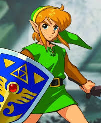
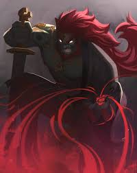

É uma série de jogos eletrônicos de ação-aventura com alguns elementos de RPG, criada pela Nintendo em 1986 por Shigeru Miyamoto e Takashi Tezuka exclusivamente para os consoles da Nintendo. A maioria de seus títulos... Saiba mais

